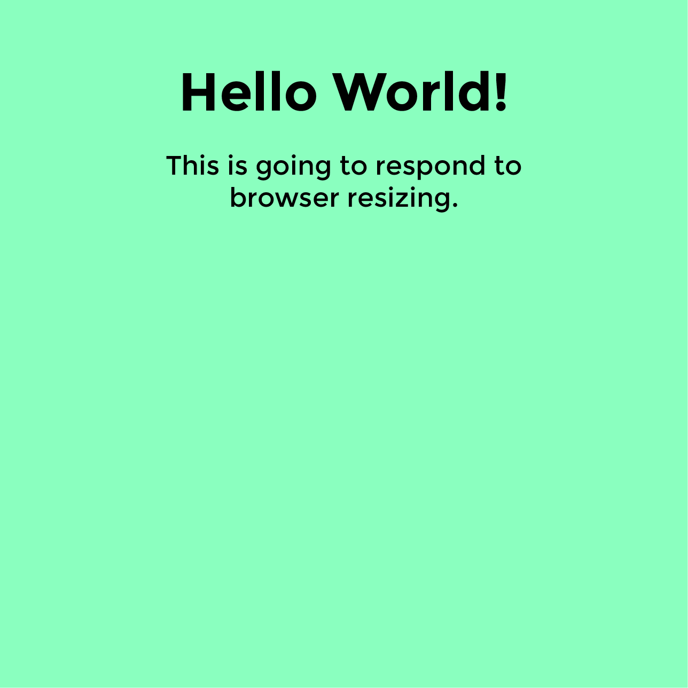

Responsive Design
Class 1
Intros, definitions, syntax
Intros, definitions, syntax
Introductions
Introductions
Goals
Wikipedia says: Responsive web design (RWD) is a web design approach aimed at crafting sites to provide an optimal viewing experience—easy reading and navigation with a minimum of resizing, panning, and scrolling—across a wide range of devices (from mobile phones to desktop computer monitors)
Here is an example of one:
The Great Discontent
Fixed: set width, styles do not change depending on resize, no media queries
Fluid: built using percentages, no media queries
Adaptive: media queries to target specific devices (mobile, tablet, desktop)
Native app: can work without an internet connection, higher quailty UX
Separate mobile site: created only for small screens, lighter and faster
Write the code once and have it functional and legible across many devices.
People are using a wide range of devices to complete their tasks now. Reading on mobile phones, shopping on tablets, etc.
What do they think about when implementing?
Play with the height and width of your browser to see what is happening
Did it make sense for the site to be built responsively?
"The first major, high-traffic, content-heavy website to adopt a responsive design" -Beaconfire Wire
Helped "raise public awareness of this flexible, standards-based, multi-platform and user-focused web design approach" -Jeffrey Zeldman
@media (min-width: 680px) and (max-width: 1020px) {
h1 {
font-size: 2em;
Styles go here…
}
}
These are identical:
@media all and (min-width:500px) { … }
@media (min-width:500px) { … }
Media types: all, print, screen and more
Media features: width, height, orientation and more
Hover (if the device is able to hover), luminosity (dim or bright environment?) and more
If you want to match perfectly, the font is Montserrat and the teal is #8affbf.
Start mobile first
Move on to bigger widths slowly
Start mobile first
Move on to bigger widths slowly
Why mobile first?
Show more as we size up, not hide things when the screen gets more narrow. This is because mobile tends to have less bandwidth than devices with larger screen widthsGet started on this and we will finish it up next class.
Copy taken from Hipster Ipsum
Darker teal hex color: #7ce5a6